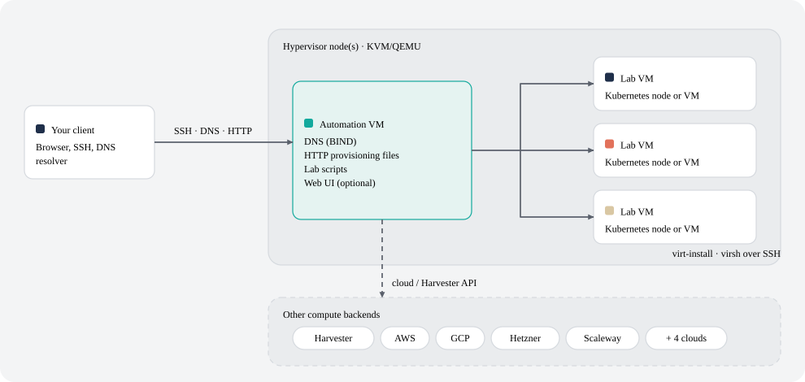
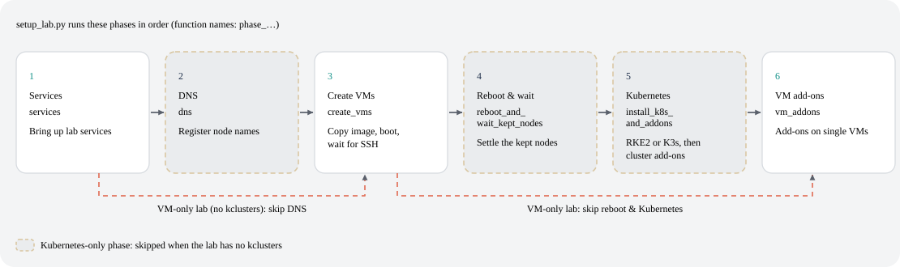
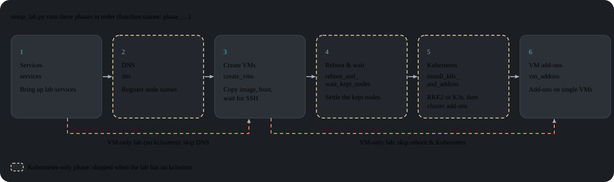

لماذا lab-in-a-box؟
- ملف واحد، أمر واحد. صف الأجهزة الافتراضية وعناقيد Kubernetes (RKE2 أو K3s) والإضافات بشكل إعلاني. ينشئهما
setup_lab.pyبترتيب الاعتماديات، دون الحاجة لتشغيلvirt-installأو Ansible بيدويًا. - معمل في البيت أو السحابة، نفس التعريف. تعمل أجهزة المعمل الافتراضية على أجهزة KVM التي تملكها أو على Harvester HCI أو على AWS أو Google Cloud أو Alibaba Cloud أو Hetzner أو Scaleway أو UpCloud أو OVHcloud أو Exoscale. يمكن للمعامل أن تمتد عبر أجهزة KVM متعددة، ومعمل واحدة يمكن أن تجمع السحب والمواقع عبر تراكب WireGuard بين السحب.
- 72 إضافة مسبقة التكامل. Rancher و Longhorn و NeuVector و Harbor و Keycloak و Jenkins و Argo CD و SUSE Multi-Linux Manager/Uyuni و Nextcloud وأكثر، بالإضافة إلى تطبيقات عرض توضيحي عرضية الضعف لتدريب الأمان.
- واجهة ويب تتابع الكود. lab-builder يصيّر كل نموذج مباشرة من مخطط الإضافة الخاص بها. يظهر الحقل الجديد في نص برمجي في الواجهة دون تغييرات الواجهة الأمامية.
- توفير قابل للاستبدال. Ignition و Combustion لـ SLE Micro و cloud-init لـ openSUSE و Ubuntu و
virt-customizeللصور القديمة أو التثبيت المأمور من ISO تثبيت فعلي (AutoYaST أو Kickstart أو Preseed أو AutoInstall). - بيانات الاعتماد خارج ملف المعمل. يمكن لبيانات اعتماد السحابة والخدمات أن تسكن في ملفات مشفرة لكل حساب (استخراج المفتاح بـ Argon2id متبوعًا بـ AES-256-GCM و ChaCha20-Poly1305 متسلسلة).
- اختبارات مُحاوية. يعمل كل فحص في حاويته
podmanالقابلة للتجاهل الخاصة والمستقلة، وخطاف قبل الالتزام يشغل الفحوصات ذات الصلة.
جدول المحتويات
- العمارة
- كيفية عمله
- البدء السريع
- واجهة الويب (lab-builder)
- صيغة تعريف المعمل
- أمثلة
- نزهات خطوة بخطوة
- الأوامر المتاحة
- الإضافات المتاحة
- مرجع التكوين
- الاختبار
- المساهمة / إعداد المطور
العمارة
يعتمد النظام على عمارة ذات مستويين:



عقد المراقب
واحد أو أكثر من أجهزة فيزيائية (معادن عارية) مع KVM/QEMU. يستضيف كل واحد أجهزة افتراضية معمل ويحتفظ بصور QCOW2 المصدر في /var/lib/libvirt/images/sources/. يكفي NUC أو محطة عمل أو أي آلة x86_64 تشغل KVM. يمكن للمعامل التي تتطلب سعة أكثر مما توفره آلة واحدة أن تمتد عبر أجهزة KVM متعددة — انظر معامل متعددة الأجهزة أدناه.
جهاز الأتمتة الافتراضي
جهاز افتراضي صغير على المراقب يعمل كمستوى التحكم لجميع المعمل. يوفر:
- DNS — BIND (
named) يخدم نطاق المعمل ويعيد توجيه الاستعلامات الخارجية، بحيث يتم حل جميع أسماء مضيفي المعمل من أي عميل يشير إليه - HTTP — تقديم الملفات المؤقتة (Ignition و Combustion و cloud-init) في
/srv/www/htdocs/lab_creation/ - النصوص — جميع أوامر إدارة المعمل مثبتة في
/usr/local/bin/ - واجهة الويب (اختيارية) — lab-builder ومصمم قائم على المتصفح لملفات lab.json
يتم تشغيل جميع أوامر المستخدم على جهاز الأتمتة الافتراضي. يتصل عبر SSH مع المراقب أو المراقبين والأجهزة الافتراضية المنشأة. بعد الإعداد الأول لا يتطلب الوصول المباشر إلى المراقب.
تحت الغطاء
أدوات سطر الأوامر وكل إضافة هي Python 3.11 وتوجد في libs/ و scripts/ ومثبتة في /usr/local/lib/lab_creation/. يتم تنظيمها حول مجموعة صغيرة من وحدات مكتبة مشتركة (lab_creation.py و backends.py و services.py و spacecmd_common.py إلخ) التي لا تعتمد على بعضها البعض. ينفذ إنشاء الجهاز الافتراضي عبر واجهة VMBackend قابلة للاستبدال مع عشر تطبيقات: libvirt و Harvester وثماني سحب عامة (انظر الواجهات الخلفية الحسابية). لا تتغير الإضافات وكود التنسيق بينها. يتم أرشفة تطبيقات Bash التي استبدلت تحت legacy_bash/ — بما في ذلك install_ds389 الأصلي.
كيفية عمله
خط أنابيب النشر
ينفذ setup_lab.py تسلسلاً ثابتًا من المراحل. يتم تخطي المرحلتين الخاصتين بـ Kubernetes تمامًا لمعمل بدون قسم kclusters:


توفير الجهاز الافتراضي
ينشأ كل جهاز افتراضي كالتالي:
1. تحديد أي مراقب KVM يقيم عليه (الحقل الصريح kvm_host أو الاختيار التلقائي بالسعة الحرة — انظر معامل متعددة الأجهزة)
2. نسخ وتوسيع صورة QCOW2 المصدر على ذلك المراقب
3. إنشاء ملفات المؤقت من القوالب وفقًا لـ config_method
4. تسجيل إدخال DNS في BIND
5. تشغيل virt-install على المراقب عبر SSH
6. انتظار توفر SSH
يتم التحكم في طريقة التوفير بواسطة config_method في JSON المعمل (لكل عقدة أو في common):
| القيمة | الطريقة | تستخدم ل |
|---|---|---|
| (فارغ، الافتراضي) | Ignition + Combustion | SLE Micro |
cloud-init |
cloud-init ISO | openSUSE Leap و Ubuntu |
virt_customize |
يعدل QCOW2 مباشرة على المراقب (virt-customize) — لا يوجد دعم Ignition/cloud-init مطلوب على الضيف |
CentOS 7 و RHEL/Debian القديم أو أي صورة بدون Ignition/cloud-init |
install_iso |
التثبيت المأمور من ISO تثبيت فعلي (AutoYaST أو Kickstart أو Preseed أو AutoInstall محدد عبر install_type) |
التوزيعات بدون مسار توفير آخر |
الواجهات الخلفية الحسابية
حيث تنشأ جهاز المعمل الافتراضي يقرره واجهة VMBackend قابلة للاستبدال. يتم حلها مرة واحدة لكل عقدة من حقل backend الخاص بها (أو من cloud_account الذي يعني الواجهة الخلفية). الافتراضي هو libvirt. تتحدث كل إضافة وسكريبت تنسيق مع الواجهة الخلفية المحللة بنفس الطريقة بغض النظر عما هي:
| الواجهة الخلفية | حيث يعمل الجهاز الافتراضي |
|---|---|
libvirt |
مراقب KVM/QEMU تشغله (الافتراضي) |
harvester |
عنقود Harvester HCI كـ KubeVirt VirtualMachines |
aws |
Amazon EC2 |
gcp |
Google Compute Engine |
alibaba |
Alibaba Cloud ECS |
hetzner |
Hetzner Cloud |
scaleway |
Scaleway Instances |
upcloud |
UpCloud |
ovhcloud |
OVHcloud Public Cloud |
exoscale |
Exoscale |
إعداد Kubernetes
بمجرد تشغيل الأجهزة الافتراضية ينشر setup_lab.py Kubernetes على كل عقدة وفقًا لقسم kclusters من JSON. يدعم كل من RKE2 و K3s. بمجرد أن يكون عنقود جاهزًا تعمل إضافاته بالتتابع. الإضافات الافتراضية (المخصصة لعقدة فردية بدلاً من عنقود) تعمل لاحقًا مرة يكون هذا العقدة موفرة.
البدء السريع


المتطلبات
- آلة يمكن تشغيل KVM عليها (Intel VT-x أو AMD-V مفعل)
- إمكانية الوصول للإنترنت (أو مرآة محلية) لتحميل الحزم والصور
- صورة QCOW2 لنظام التشغيل المختار في
/var/lib/libvirt/images/sources/على المراقب
الصور المختبرة: - SLE Micro — موصى بها تستخدم مع Ignition+Combustion - openSUSE Leap Micro — مدعومة تستخدم مع cloud-init
الخطوة 1 — تحضير نظام التشغيل المراقب
ثبت SLES (أو توزيع Linux قادر على KVM آخر) على الأجهزة الخاصة بك. أثناء التثبيت اختر:
- الشبكات: إنشاء جسر (br0) متصل بـ NIC الرئيسي الخاص بك مع IP ثابت
- دور النظام: مضيف الافتراضية KVM
الخطوة 2 — تمهيد سكريبتات الإعداد
من أي آلة Linux بها وصول SSH للمراقب:
curl https://raw.githubusercontent.com/SUSE-Technical-Marketing/lab-in-a-box/main/install_demo_server_scripts.sh | bash -
هذا يحمل سكريبتات الإعداد إلى /var/tmp/setup_demo_server/.
الخطوة 3 — تكوين وتشغيل إعداد عقدة KVM
cd /var/tmp/setup_demo_server/setup_demo_server/
vim lab.cfg
الإعدادات المهمة في lab.cfg:
| الإعداد | الوصف |
|---|---|
ROOT_PWD_HASH |
كلمة مرور root مُجزأة — توليد باستخدام mkpasswd --method=SHA-512 --stdin |
ROOT_SSH_PUB_KEY |
مفتاح SSH العام الخاص بك للوصول بدون كلمة مرور |
AUTOMATION_HOSTNAME |
اسم مضيف جهاز الأتمتة الافتراضي (مثل automation.mydemo.lab) |
_QCOW_IMAGE |
اسم ملف صورة QCOW2 المصدر |
| إعدادات الشبكة | IP و البوابة و القناع و DNS لشبكة المعمل |
ثم قم بتشغيل الإعداد (استبدل <IP> بـ IP المراقب الخاص بك أو حذفه للإعداد المحلي):
./setup_kvm_node.py <IP>
هذا يزود جهاز الأتمتة الافتراضي ويبدأ جميع الخدمات المطلوبة.
الخطوة 4 — تكوين جهاز الأتمتة الافتراضي
اتصل عبر SSH بجهاز الأتمتة الافتراضي وثبّت سكريبتات المعمل:
ssh <AUTOMATION_HOSTNAME>
./install_automation_node_scripts.sh
cp /etc/lab_creation.cfg.example /etc/lab_creation.cfg
vim /etc/lab_creation.cfg
الإعدادات المهمة في lab_creation.cfg:
| الإعداد | الوصف |
|---|---|
REMOTE_HOST |
اسم مضيف أو IP مراقب KVM (الأساسي) |
KVM_HOSTS |
(اختياري) قائمة مفصولة بمسافات من أجهزة المراقب الإضافية لـ معمل متعددة الأجهزة |
ROOT_SSH_KEY |
محتوى المفتاح العام SSH للإدراج في الأجهزة الافتراضية |
VIRT_SRV |
URI اتصال libvirt (مثل qemu+ssh://root@hypervisor/system) |
NETWORK |
شبكة libvirt الافتراضية للأجهزة الافتراضية (مثل bridge=br0) |
الخطوة 5 — الإشارة إلى DNS للعميل جهاز الأتمتة الافتراضي
لحل أسماء المضيفين من سطح المكتب الخاص بك:
# Linux (NetworkManager):
nmcli con mod <connection> ipv4.dns <AUTOMATION_IP>
# أو أضفه إلى /etc/resolv.conf:
nameserver <AUTOMATION_IP>
الخطوة 6 — بناء أول معمل
setup_lab.py examples/cluster.json.template
ستجد نقاط بداية أكثر أدناه في أمثلة. بدلاً من ذلك يمكنك فتح الواجهة بدلاً من كتابة JSON يدويًا.
واجهة الويب (lab-builder)
مصمم ملفات lab.json قائم على المتصفح يقيّم مكتبات Python الخاصة بالمشروع في وقت التشغيل. لا يملك معرفة مدمجة عن أي إضافة. حدد مكون وسيُصيّر نموذج مباشرة من مخططها. أضفِ حقل إلى سكريبت وستعرضه الواجهة دون تغييرات الواجهة الأمامية.
# الطريقة الأسرع لتجربتها — لا توجد مسؤوليات خارج Python:
python3.11 webui/run-local.py # → http://localhost:8677/
للإنتاج (Apache أو خدمة systemd/init مستقلة بالإضافة إلى HTTPS فوق شهادة موقعة ذاتيًا) انظر README.webui.md. هناك توصيف الأنماط الثلاثة و HTTP API وحل المشاكل.
صيغة تعريف المعمل
تُعرّف المعامل كملفات JSON أو YAML (يُكتشف تلقائيًا انظر الملاحظة أدناه). التنسيق الحالي يدعم عناقيد Kubernetes متعددة لكل معمل (kclusters). التنسيق لعنقود واحد (cluster) يجد في examples/cluster.json.template.
المزيد من الأقسام (خطوات توضيحية تفصيلية والمراجع والأمثلة) موجودة في الوثائق الكاملة على GitHub.
الاختبار
يعمل كل فحص في حاويته podman المستقلة والقابلة للتجاهل الخاصة به:
tests/run_tests.sh
المساهمة / إعداد المطور
انظر CONTRIBUTING.md على GitHub للدليل الكامل.